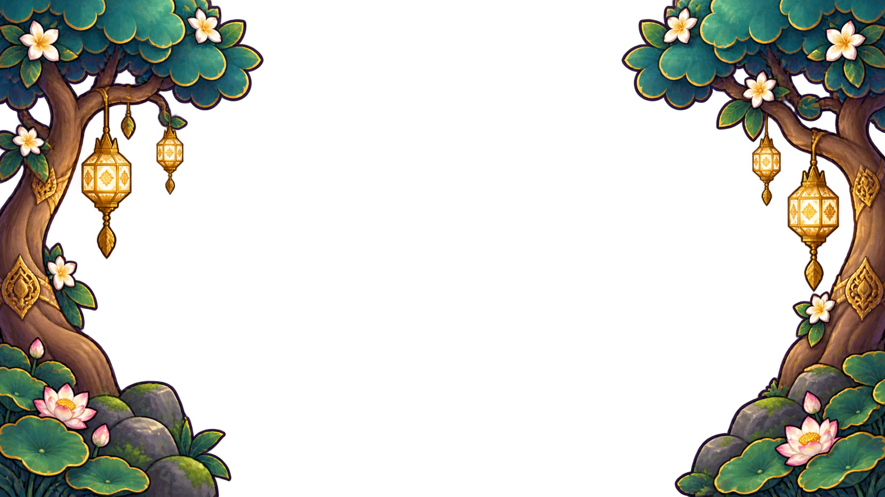

สีประจำโลก
ม่วงทองหยกกระดาษปะการัง
ปุ่มและสถานะ
ลองชี้ กด หรือใช้ Tab เพื่อดูสถานะปุ่ม
ไอเทม • ท่าทาง • เอฟเฟกต์ • ฉาก • ส่วนประกอบเมนู

เกมประกอบฉากไกล ต้นไม้ พื้นชนจากเซิร์ฟเวอร์ และหิ่งห้อย แยกกันเพื่อขยับได้โดยไม่เปลี่ยนพื้นที่ชน
ลองชี้ กด หรือใช้ Tab เพื่อดูสถานะปุ่ม
ระดับเป็นข้อมูลประกอบไอเทม แยกจากค่า + และค่าพลัง · SS เป็นตัวอย่าง UI ยังไม่มีอุปกรณ์ระดับนี้ในร้าน